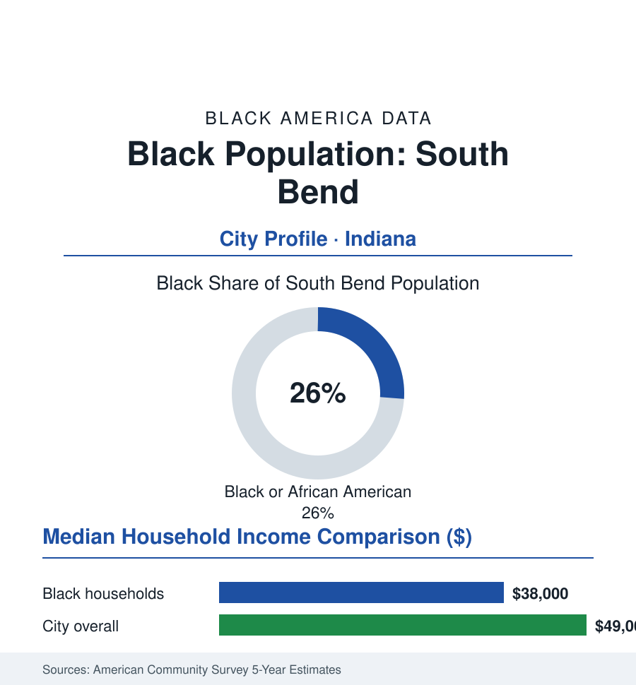

Black Cities
Black South Bend: 27,000 People in Notre Dame's Other City
South Bend's Black community, about 27,000 strong and 26% of the city, built itself around Studebaker and Bendix and remade its politics. The census portrait.

South Bend's Black community numbers approximately 27,000 people — about 26% of the city's 103,000 residents, the highest Black share of any mid-size Indiana city — and it lives a dual existence the data capture plainly: a working-class industrial community built around Studebaker and Bendix, in a city globally branded by a university most of its members' grandparents could not have attended. The community's modern record includes one of Indiana's most developed Black political establishments and a vacancy-and-reinvestment struggle on its west side that became national news in the city's recent mayoral era. This profile reads the numbers.
Studebaker, Bendix, and the West Side
South Bend's Black growth came with the wagon-maker turned automaker: Studebaker (the city's defining employer for a century — its 1963 closure a byword for industrial death) and the Bendix aviation and brake works drew Black Southerners through the Great Migration's Indiana corridor, settling the west side and the near northwest — the LaSalle and Linden Avenue corridors of the community's church, lodge, and small-business record. The post-Studebaker decades ran the familiar Rust Belt reel at a deeper cut (South Bend lost a quarter of its population from its 1960 peak): the machinery and auto-supplier remnant, the university's growth as anchor, the hospital systems, and the public schools and city services as the Black workforce's stable tier. The west side's physical file — the vacancy counts that made the city's '1,000 houses in 1,000 days' demolition-and-repair initiative a national story — is the community's built ledger: whole blocks of the Studebaker-era housing stock lost to abandonment in the 2000s, with the neighborhood's churches and associations carrying the continuity through the clearance years.
Politics and Institutions: A Small City's Deep Bench
For its size, Black South Bend's political record is heavyweight in the state data: Black mayors in the recent era (the city's chief executives of the 2010s and 2020s from the community — the council and mayoral rosters of record), a common council with long Black representation from the west-side districts, and the county and state-legislative delegations carrying the community into Indianapolis. The institutional skeleton matches: a venerable NAACP chapter, the Urban League of South Bend, Black Greek organizations with alumni chapters, Indiana University South Bend (the public campus — the city's most accessible bachelor's door, its Black enrollment proportionate and its community programs embedded on the west side), Ivy Tech's campus, and Notre Dame itself — whose Black enrollment (in the low single digits of its undergraduate body for most of its modern history, its institutes and its Hesburgh-era civil-rights institutional memory a studied duality) and whose town-gown programs form the community's most argued local relationship. The faith network — the west side's historic Baptist and AME congregations — remains the civic load-bearing structure, and the Black press tradition (the South Bend Tribune's coverage and the community's own historic papers, archived at IUSB) preserves the record.
The Economic Ledger
The ACS figures for Black South Bend run hard even by Rust Belt standards: median household income in the high thirty-thousands against a city median in the high forty-thousands (the university pulling the city's upper tail); homeownership around forty percent — the west side's affordable stock an ownership ladder for those who hold through, its valuations the appreciation file's floor; poverty above thirty percent in the recent five-year estimates. The employment base in the census record: Notre Dame and the university economy (service, clerical, and facilities tiers heavily Black in the workforce composition), the hospital systems (Memorial and Saint Joseph), the schools and city, logistics along the toll-road corridor, and the remaining manufacturing. The reinvestment question of the current era mirrors Fort Wayne's at closer range: the downtown and riverfront growth and the university's expansion generate the tax and amenity gains; the west side's share of them — in the housing-repair programs, the small-business corridors, the school investments — is the data argument the community's deep political bench exists to make.
Reading South Bend's Numbers
A quarter of the city, a century of industry, a political bench beyond its size, and a west side whose empty lots are the Studebaker century's final balance sheet: South Bend is the atlas's portrait of the small industrial city where the Black community is not a neighborhood but a constituency — organized, represented, and still waiting on the reinvestment arithmetic to reach its side of the river. The next census will grade the initiatives. The institutions counting will still be there.
More in Black Cities
Black Atlanta: Population, Distribution, and Growth of a Black Metropolis
Metro Atlanta holds more than two million Black residents — roughly one in three, second only to New York. The suburban distribution, migration history, and composition of Black Atlanta in the census data.
Black New York: The Largest Black Population in America
The New York metropolitan area holds about 3.4 million Black residents — more than any metro in the nation — and the city itself about two million. The census profile.
Black Washington: The District and the Metro
The Washington metro holds about 1.6 million Black residents, and the District itself — long a majority-Black city — now records a Black share near 41 percent. The census profile.
Source: U.S. Census Bureau, 2020 Census and American Community Survey 5-year estimates; City of South Bend; Indiana University South Bend archives and local reporting.